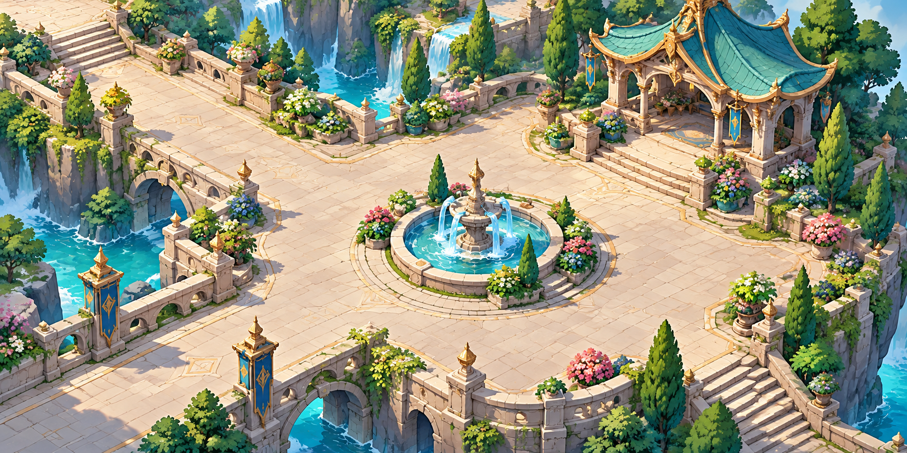
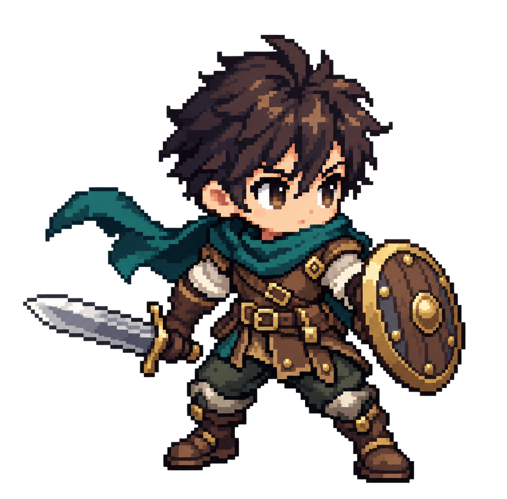
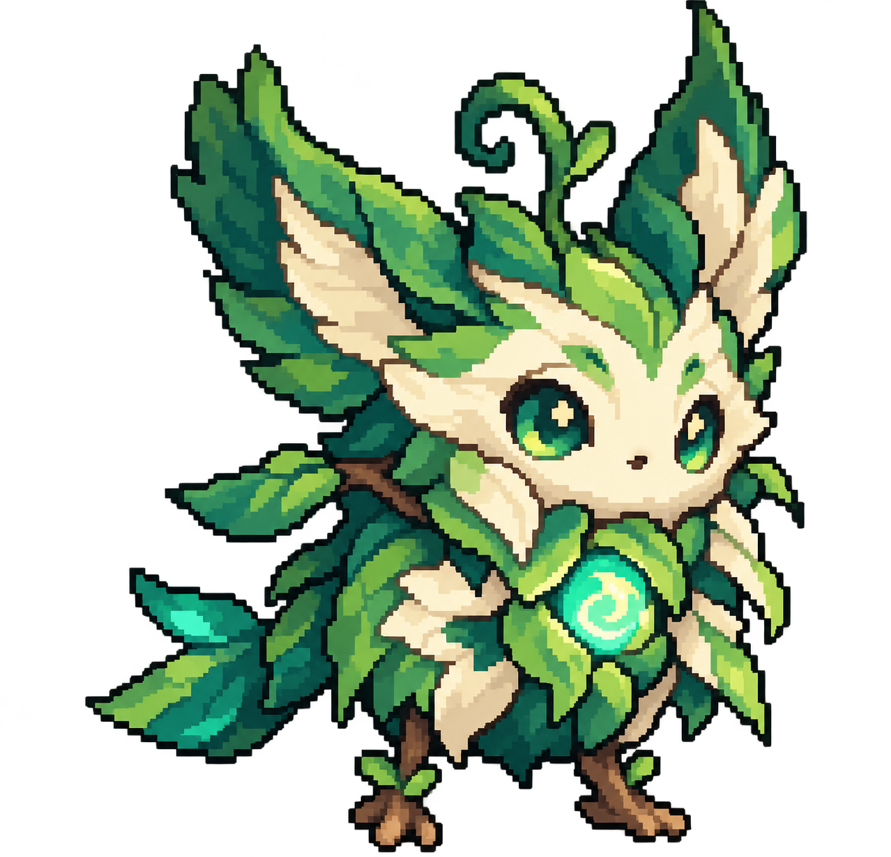

Map scene
Cartoon HD
ฉาก isometric · รูปทรงอ่านง่าย · พื้นที่เล่นเปิดโล่ง

ลานหินและน้ำพุเป็นจุดนำสายตา พร้อมคงทางหลักให้โล่งสำหรับการเล่นและต่อสู้
ตัวอย่าง 3 หมวดจากทิศทางที่ทีมเลือก: ฉาก Cartoon HD, ตัวละคร Cartoon Lite Pixel และมอนสเตอร์ Dream Lite Pixel — แต่ละหมวดยังคง medium ของตัวเอง
ฉาก isometric · รูปทรงอ่านง่าย · พื้นที่เล่นเปิดโล่ง

ลานหินและน้ำพุเป็นจุดนำสายตา พร้อมคงทางหลักให้โล่งสำหรับการเล่นและต่อสู้
ตัวละคร native pixel art · cluster คม · silhouette ชัด

ตัวอย่างนักผจญภัยหนึ่งตัวในท่ายืน เห็นอาวุธและโล่ครบ; สร้างเป็น pixel clusters ตั้งแต่ต้น ไม่ใช้ฟิลเตอร์ pixelate
มอนสเตอร์ native pixel art · รูปทรงแฟนตาซีนุ่ม · แสงเรืองเป็น accent

ตัวอย่างมอนสเตอร์ป่าหนึ่งตัว ใช้แสง jade เพียงจุดเดียวเพื่อเน้น core โดยไม่กลบ silhouette